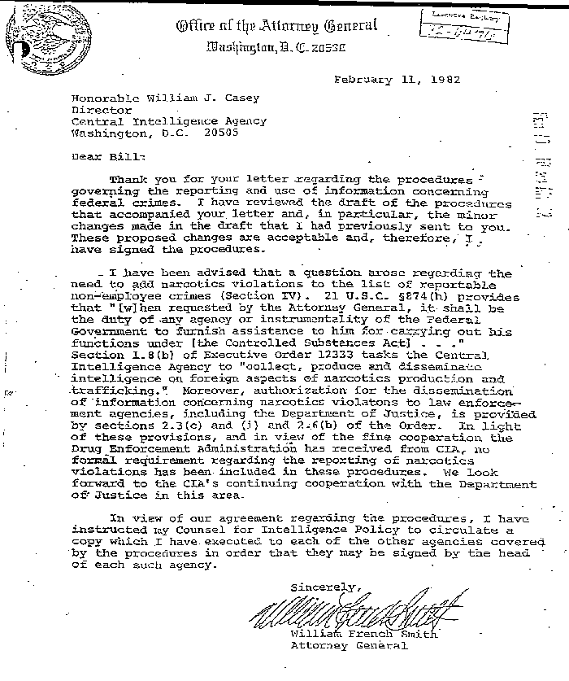

~
Memorandum of Understanding February 11, 1982
~
One of the more embarrassing documents ever released by the United States Federal government is the Memo of Understanding of February 11, 1982, sent by William French Smith to William Casey. Smith was Reagan's Attorney General and Casey was the head of CIA under Reagan.
When the CIA was ordered to investigate its involvement in drug importation into the United States during the Iran-Contra-Mena crime-spree, this Memo of Understanding (MOU) surfaced among the papers CIA included in its report to Congress. What this inter-agency memo is saying is that the Department of Justice would not require the CIA to report drug dealing by its employees, non-employees, or assets. This was arranged between Smith and Casey during the height of the Iran-Contra illegal arms deals and massive cocaine importation into America. The cocaine was introduced into America for profits, which would be used to covertly fund the CIA-created Contra forces despite Congressional law (the Boland Amendments) which forbade just that.
View the document for yourself at the CIA's website:
https://www.cia.gov/library/reports/general-reports-1/cocaine/contra-story/13.gif
And here is a copy of that jpeg:

Crucial line comes in the next-to-last paragraph with this sentence:
"In light of these provisions, and in view of the fine cooperation the Drug Enforcement Administration has received from CIA, no formal requirement regarding the reporting of narcotics violations has been included in these procedures."
That was the Attorney General of the U.S. Justice Department telling the Director of Central Intelligence at the CIA that the CIA did not need to bother itself to report "narcotics violations" (think: drug dealing) by employees, non-employees, and assets of the CIA. It is one small piece of the puzzle regarding government deception of the public in the name of the War on Drugs, and it got put down on paper and now it's a part of American history.
This jpeg copy of the MOU is relevant to: Persistence_Of_Pardonable_Criminals
~